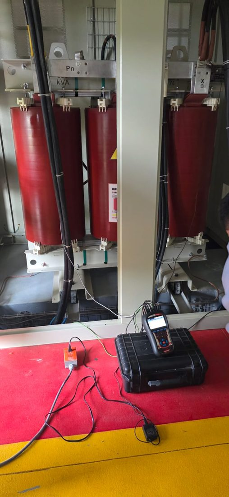
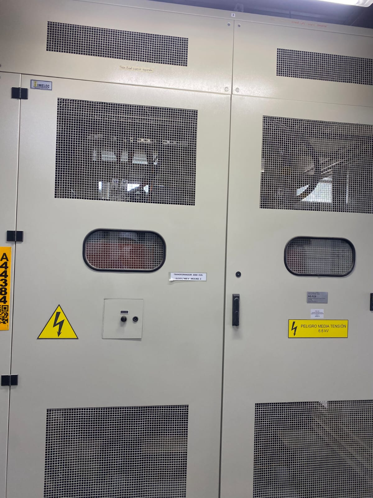
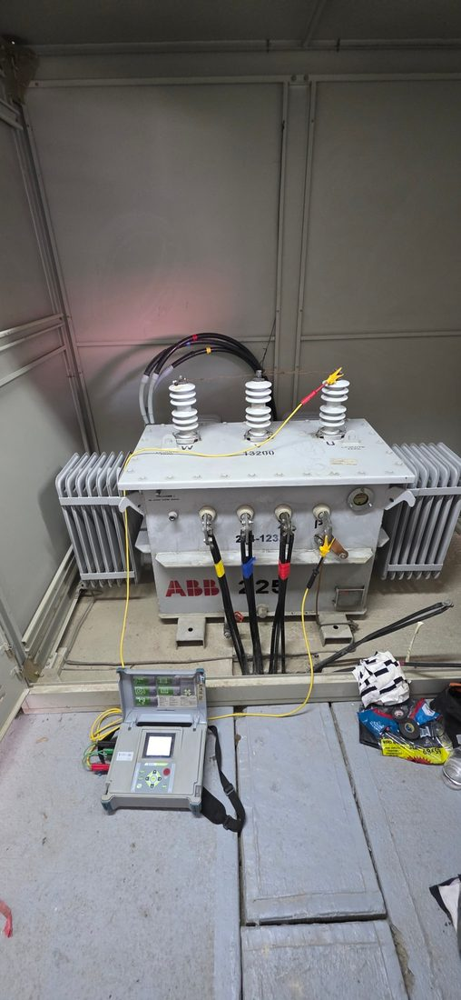
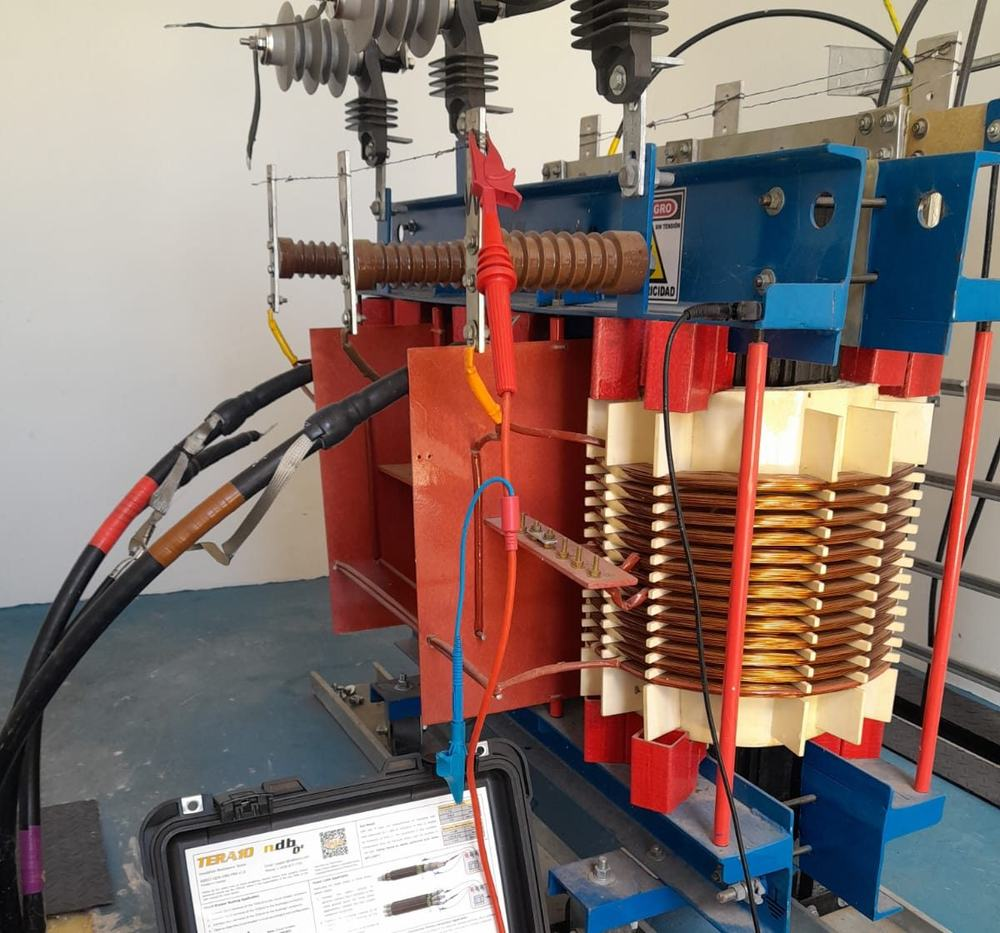

Mantenimiento y Diagnóstico de Transformadores
Mantenimiento preventivo y pruebas eléctricas de diagnóstico para transformadores secos y sumergidos en aceite, adaptando el protocolo según el tipo y la condición del equipo. Cobertura en Barranquilla, Atlántico y la Región Caribe.





Un transformador que falla sin aviso detiene tu operación
El desgaste del aislamiento y la degradación del aceite dieléctrico no se ven a simple vista. Nuestro mantenimiento combina inspección física, limpieza técnica y pruebas eléctricas de diagnóstico para evaluar el estado real del transformador y decidir con evidencia si basta con mantenimiento preventivo o si hay un riesgo que atender a tiempo.
- Transformador que falla sin aviso, deteniendo la operación.
- Desgaste del aislamiento no detectado a tiempo.
- Dudas sobre la confiabilidad de un transformador usado o de segunda mano.
Mantenimiento preventivo
Trabajamos transformadores secos y sumergidos en aceite, de media y baja tensión, en distintas capacidades. Cuando corresponde según el tipo y condición del equipo, incluimos:
Inspección visual y mecánica
Revisión general del estado físico del equipo y sus componentes.
Limpieza técnica
Remoción de polvo, humedad y contaminación acumulada.
Revisión de conexiones
Verificación de ajuste y estado de terminales y conexiones.
Inspección de aisladores
Estado físico de bujes y aisladores externos.
Sistemas de refrigeración
Verificación de radiadores, ventiladores y niveles, según el tipo de transformador.
Inspección de fugas y accesorios
Fugas de aceite, indicadores, válvulas y demás accesorios del equipo.
Pruebas eléctricas que realizamos
Cada prueba evalúa un aspecto específico del transformador; el estado general se interpreta en conjunto, no a partir de un solo resultado.
Resistencia de aislamiento
Evalúa el estado del aislamiento entre devanados y tierra.
Relación de transformación (TTR)
Verifica que la relación de vueltas entre devanados sea la correcta.
Resistencia óhmica de devanados
Detecta conexiones deficientes o daños en los devanados.
Factor de potencia del aislamiento
Prueba de disipación dieléctrica que mide la calidad del aislamiento del transformador — no debe confundirse con el factor de potencia de una instalación eléctrica.
Análisis de aceite dieléctrico
Toma de muestra en sitio y envío a laboratorio especializado, según los ensayos que se soliciten (ver detalle en Pruebas Eléctricas).
Informe técnico
Resultados, interpretación técnica conjunta y recomendación de acción.
Cómo trabajamos
Revisión inicial y mantenimiento preventivo
Verificación de placa de características, inspección visual y mecánica, limpieza técnica y revisión de conexiones, aisladores y accesorios.
Pruebas eléctricas de diagnóstico
Aislamiento, TTR, resistencia óhmica y factor de potencia del aislamiento, según el tipo y condición del equipo.
Toma de muestra de aceite
Cuando aplica, para transformadores sumergidos en aceite, con envío a laboratorio especializado.
Informe técnico
Resultados, interpretación técnica conjunta y recomendación de acción, conforme a los lineamientos de RETIE.
Trabajo de campo
Por qué hacer este diagnóstico
Evidencia antes de invertir
Resultados objetivos para decidir entre reparar, seguir monitoreando o reemplazar el equipo.
Menos riesgo de falla súbita
Ayuda a detectar desgaste del aislamiento y a reducir el riesgo de una parada no programada.
Protocolo documentado
Soporte técnico para decisiones de mantenimiento, garantías o auditorías.
Protege una inversión de alto valor
Un transformador es uno de los activos eléctricos más costosos de reponer.
Resolvemos tus dudas
¿Qué pruebas permiten saber si un transformador está en buen estado?
Principalmente la resistencia de aislamiento, la relación de transformación (TTR), la resistencia óhmica de devanados y, en transformadores en aceite, el análisis fisicoquímico del aceite dieléctrico. En conjunto indican el estado del aislamiento y los devanados.
¿Hacen mantenimiento a transformadores secos y en aceite?
Sí, a ambos tipos, adaptando el protocolo de prueba según el tipo y la condición del equipo.
¿Qué capacidad de transformadores atienden?
Trabajamos transformadores de media y baja tensión en distintas capacidades, incluyendo unidades de gran potencia.
¿Cómo sé si necesito mantenimiento correctivo o solo preventivo?
Lo determina la condición real del equipo. Por eso la primera visita siempre incluye un diagnóstico — a partir de ahí recomendamos si basta con mantenimiento preventivo o si se requiere intervención correctiva.
¿Cubren transformadores fuera de Barranquilla?
Sí, en el departamento del Atlántico y la región Caribe colombiana.
También puede interesarte
Mantenimiento de Subestaciones
Mantenimiento integral a subestaciones eléctricas de media tensión.
Ver detalle →Pruebas Eléctricas Especializadas
Diagnóstico eléctrico, análisis de aceite dieléctrico y termografía industrial.
Ver detalle →Mantenimiento Eléctrico General
Vista completa de todos nuestros servicios de mantenimiento eléctrico.
Ver detalle →¿Necesitas diagnóstico para tu transformador?
Cuéntanos el tipo y la condición del equipo y te orientamos sin compromiso.